Bab 3: Desain Arsitektur & Diagram UML (System Design Document - SDD IEEE 1016)
3.1 DFD Level 0 (Context Diagram) #
Mendefinisikan aliran data global masuk dan keluar dari sistem. Menunjukkan interaksi antara Administrator, WhatsApp Bot System, dan Meta WA Servers.
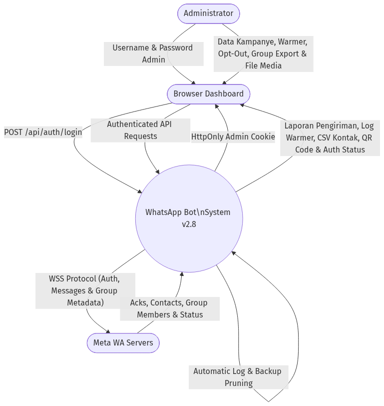
Admin -> Sistem: Input Kredensial, Data Kampanye, Preset Dialog Warmer, Pilihan Grup untuk Ekstraksi
Sistem -> Admin: Laporan Pengiriman, Log Warmer, CSV Kontak, QR Code
Sistem <-> Meta: WSS Protocol (Auth, Messages, Group Metadata, Acks, Contacts, Status)
3.2 DFD Level 1 (Data Flow Diagram) #
Merinci aliran data spesifik ke dalam subsistem utama: Admin Auth Gateway, REST Controllers, Media Upload Manager, Session Manager Worker, Campaign Polling Worker, Warmer Polling Worker, dan Log Pruner Worker.
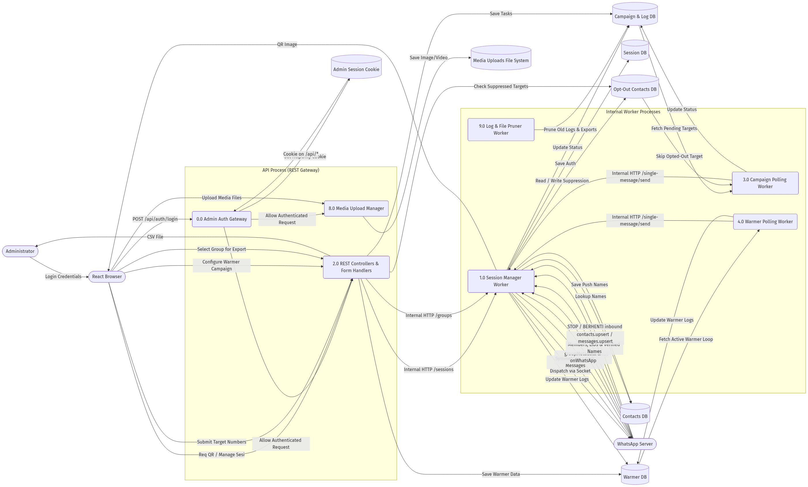
| Proses | Nama Subsistem | Input | Output | Data Store |
|---|---|---|---|---|
| 0.0 | Admin Auth Gateway | Login credential admin | HttpOnly session cookie, API gate | Browser Cookie |
| 1.0 | Session Manager Worker | Internal HTTP dari REST Controller | Koneksi WSS, socket event | Session DB, Contacts DB, Opt-Out DB |
| 2.0 | REST Controllers | HTTP dari Browser React | Internal API, Save Tasks, CSV | Campaign DB, Warmer DB |
| 3.0 | Campaign Polling Worker | Fetch Pending Targets | Panggil Session API, Update Log | Campaign & Log DB |
| 4.0 | Warmer Polling Worker | Fetch Active Warmer Loop | Panggil Session API, Update Log | Warmer DB |
| 8.0 | Media Upload Manager | Upload File (multipart) | Path File | Media Uploads File System |
| 9.0 | Log & File Pruner Worker | Schedule Trigger | Hapus log & CSV lama | Campaign & Log DB |
3.3 Component Diagram (UML) #
Menunjukkan bagaimana modul-modul backend terisolasi dan berinteraksi. Dibagi menjadi layer Frontend, Backend Gateway dengan Admin Auth Middleware, Core Engine, dan SQLite Storage.
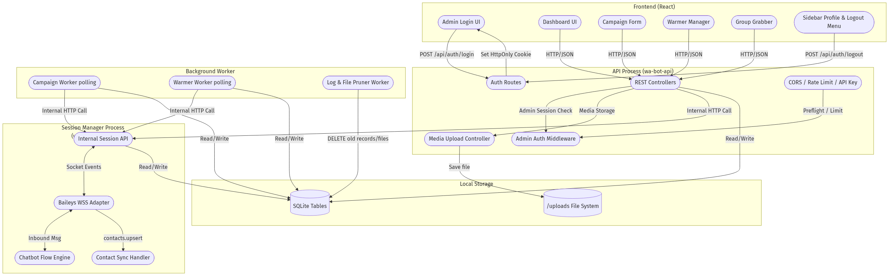
3.6 Diagram Sekuensial Sistem (UML Sequence Diagrams) #
Berikut adalah 5 diagram sekuensial yang merinci interaksi antar-objek dan komponen secara waktu-nyata untuk setiap skenario proses bisnis utama dalam sistem WA-Bot Pro.
3.6.1 Alur Koneksi Sesi & Autentikasi QR Code
Mendokumentasikan proses inisiasi instansi WhatsApp, pembentukan socket Baileys di Session Manager Worker, pengiriman gambar QR Base64 ke frontend, pemindaian smartphone, hingga penyimpanan file kredensial ke disk lokal.
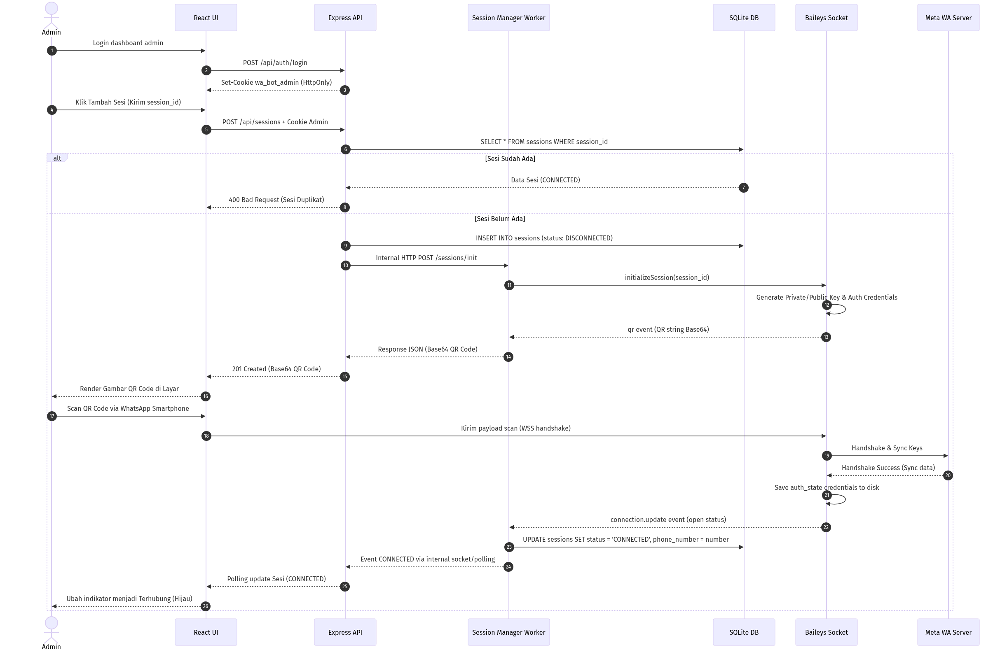
React UI POST /api/sessions -> Express API meneruskan via internal HTTP ke Session Worker -> Session Worker menginisiasi soket Baileys -> Baileys menghasilkan QR Code Base64 -> Admin memindai QR Code via smartphone -> Handshake dengan server Meta sukses -> API memperbarui status sesi menjadi CONNECTED." loading="lazy">3.6.2 Alur Kampanye Pesan Massal (Bulk Campaign Dispatch)
Mendokumentasikan siklus hidup pengiriman pesan massal asinkron, antrean proses di Campaign Polling Worker, penguraian personalisasi modifier teks, pengiriman media, dan interaksi ke Session Manager.
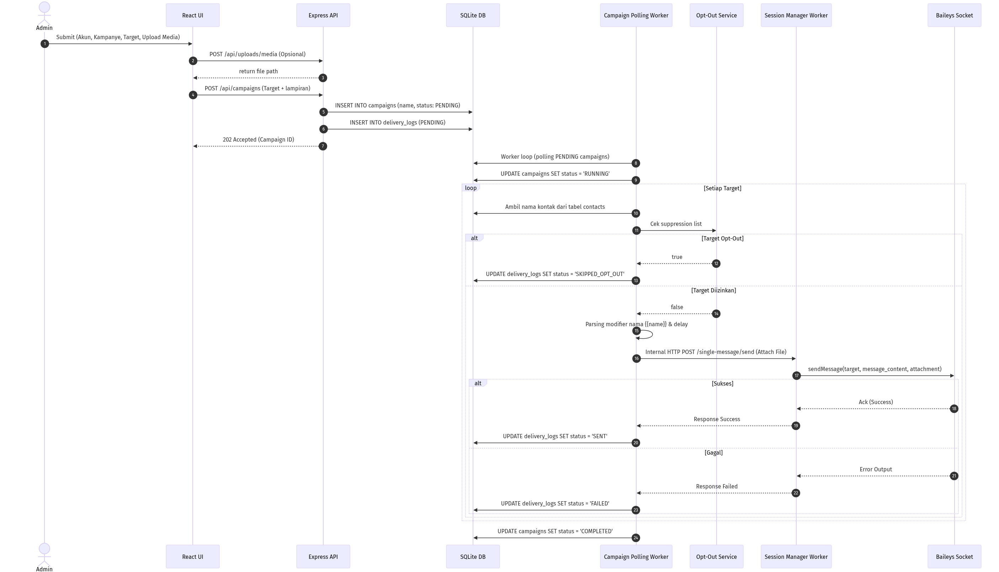
API Upload Simpan File -> API masukkan kampanye PENDING ke DB -> Campaign Worker polling target -> Worker cek suppression list -> Worker request internal HTTP send message ke Session Worker -> Session Worker eksekusi di Baileys Socket -> Status update (SENT/FAILED) dikembalikan ke DB." loading="lazy">3.6.3 Alur Dynamic Chatbot & Balasan Otomatis (Interactive Flow)
Mendokumentasikan pemrosesan pesan masuk, pencocokan kata kunci oleh Session Worker, eksekusi node statis, serta integrasi pemrosesan NLP oleh AI provider (OpenAI/Claude).
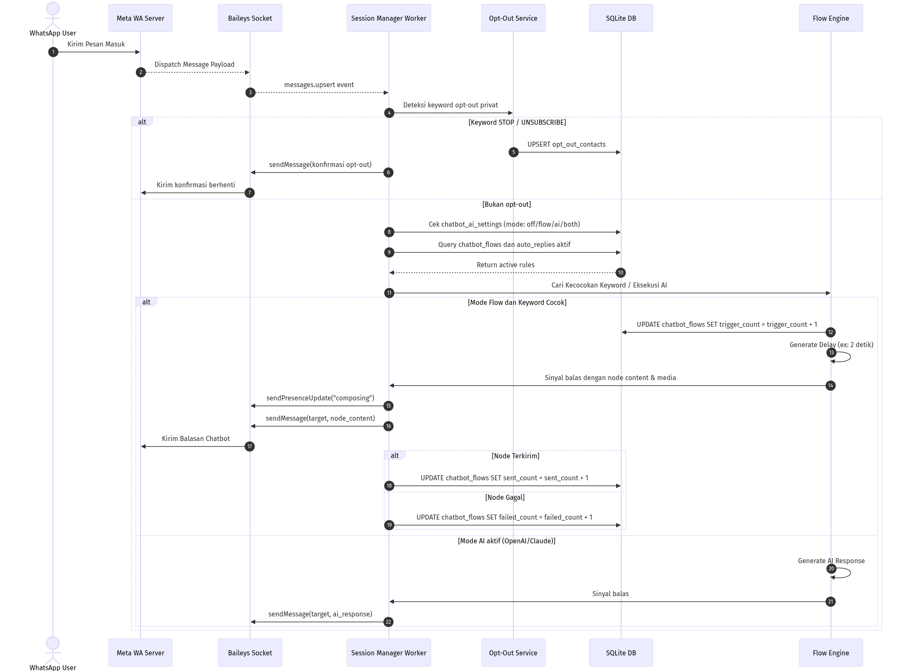
Baileys picu messages.upsert ke Session Worker -> Cek opt-out -> Cek mode chatbot (flow/ai) -> Jika mode flow: cari node cocok, jalankan delay, balasan dikirim -> Jika mode AI: Generate AI response dari provider eksternal, balasan dikirim." loading="lazy">3.6.4 Alur Ekstraksi Peserta Grup (Group Grabber & Export)
Mendokumentasikan penarikan metadata grup WA via delegasi API ke Session Worker, pemecahan Linked ID (LID) menjadi JID telepon, dan pembuatan file CSV.
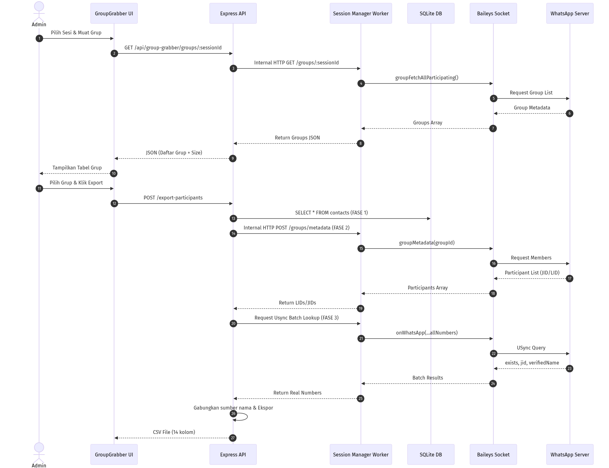
API panggil internal HTTP ke Session Worker -> Session Worker fetch meta dari Baileys -> API minta batch lookup USync ke Session Worker -> Meta kembalikan nomor asli -> API ekspor CSV." loading="lazy">3.6.5 Alur Simulasi Pemanasan Akun (WhatsApp Warmer Loop)
Mendokumentasikan peluncuran warmer oleh Warmer Polling Worker, rotasi pengirim dan penerima lewat internal HTTP ke Session Manager, emulasi typing, dan update logs.
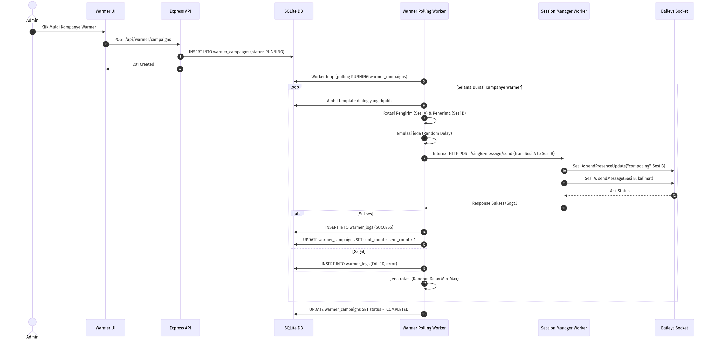
API simpan warmer_campaigns RUNNING -> Warmer Polling Worker proses antrean -> Rotasikan Sesi A & Sesi B, minta Session Manager Worker kirim composing signal dan pesan -> Setelah durasi habis, status diubah ke COMPLETED." loading="lazy">3.7 Activity Diagram (Workflow Pesan Massal) #
Menggambarkan alur kerja (workflow) pengguna saat menjalankan fitur pengiriman pesan massal berbasis non-blocking UI.
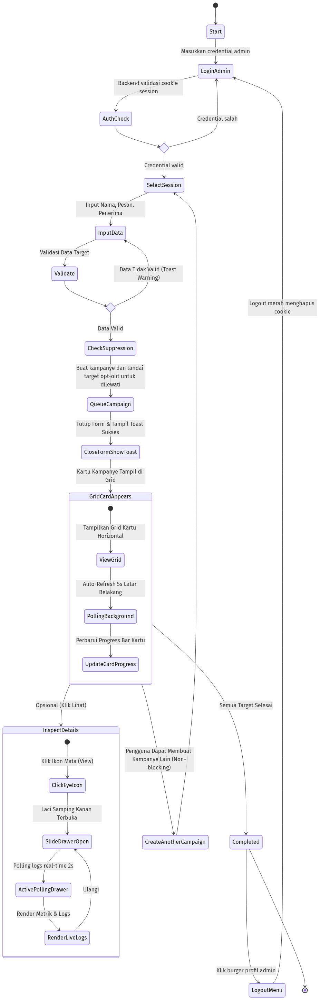
3.8 Flowchart (Alur Logika Program Utama) #
Diagram alur (Flowchart) yang merepresentasikan logika program utama saat mengeksekusi antrean pesan massal di background worker lengkap dengan modular personalisasi nama.
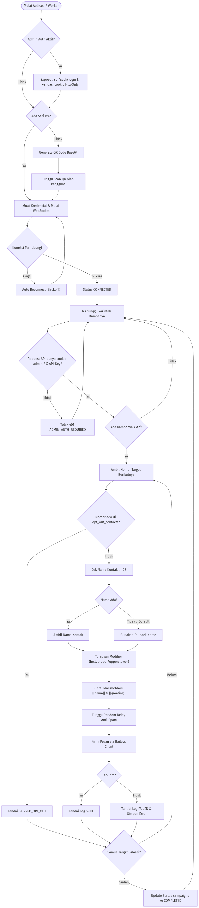
3.9 Class Diagram (OOP Backend Structure) #
Mempresentasikan struktur Class utama pada kode Backend (Node.js) yang mengatur klien WhatsApp, basis data, dan antrean pesan massal modular personalisasi.
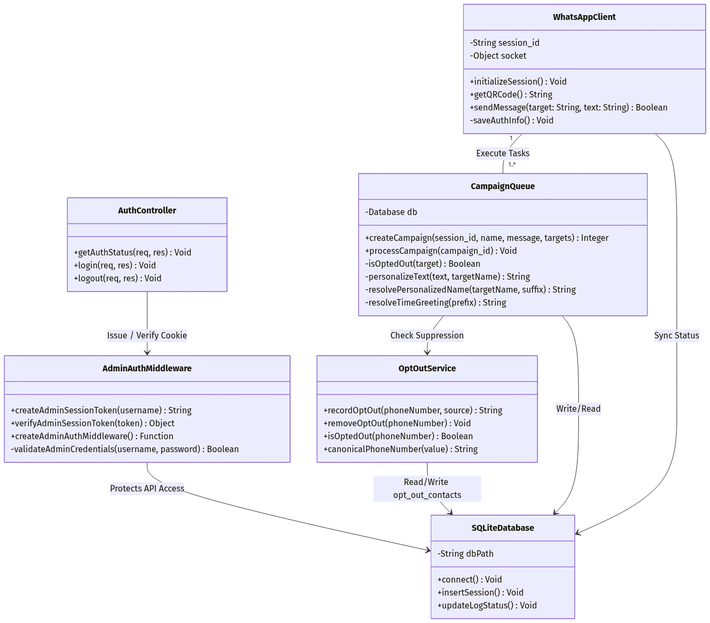
| Class | Atribut | Method | Relasi |
|---|---|---|---|
WhatsAppClient |
-session_id: String-socket: Object |
+initializeSession()+getQRCode()+sendMessage()-saveAuthInfo() |
1 -- 1..* CampaignQueue |
CampaignQueue |
-db: Database |
+createCampaign()+processCampaign()-personalizeText()-resolvePersonalizedName()-resolveTimeGreeting() |
--> SQLiteDatabase |
SQLiteDatabase |
-dbPath: String |
+connect()+insertSession()+updateLogStatus() |
<-- WhatsAppClient |
3.10 Topologi Penyebaran (Deployment Topology) #
Seksi 7.2 Diagram Deployment (Infrastructure Topology) yang memetakan topologi fisik server, firewall VPS, reverse proxy Nginx/Caddy, frontend statis, backend private, admin auth, worker, SQLite, backup, monitoring, dan alert operator didelegasikan secara terpusat pada bab DevOps demi kepatuhan Single Source of Truth.